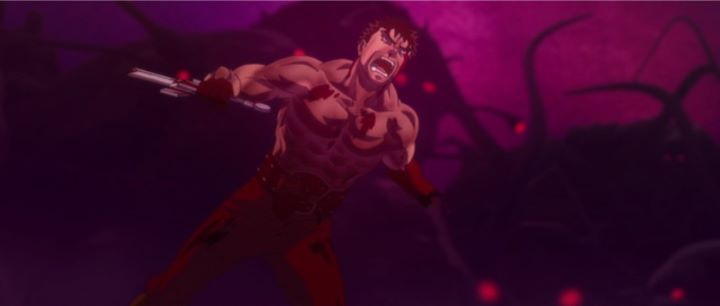

Few manga properties have run on as long as "Berserk" by Kentaro Miura. Initially published in 1989, the series still continues its story over three decades later through the slow trickle of new volumes (currently at volume 39). The dark medival fantasy gained a lot of fans in part for its powerful story, filled with sex and extreme violence. It would be difficult to find anything more deserving of being called an "epic." Since it was so incredibly popular, it isn't surprising that the manga would have an anime adaptation: first in 1997 as a television series, then in 2012 as a film trilogy (both telling the same story, a prominent fraction of the existing tale), and most recently in 2016 as a series again to move on to the following chapters.If you ask fans, most are supportive of the original 1997 anime, despite its limited production values. Those same fans are also surprisingly critical of the 2012 film series, since it covers the same parts of the story with little new material, doesn't give enough time for the story to breathe, and over-utilizes 3D animation to replace 2D character animation during action scenes. This is where I need to make a disclaimer: when I first saw "The Golden Age Arc" film trilogy, it was my first exposure to "Berserk," for I had not at the time seen either the original manga or the original anime series. With nothing else to judge it against, I experienced at least part of what made "Berserk"'s story so captivating, and it hooked me hard.From the first film "The Egg of the King," one might assume "Berserk" was a generic, but strong, pulp fantasy. It shows the start of the relationship between the two main characters of the series: Guts and Griffith. Guts is a brash and head-strong warrior, with mountains of muscle and his share of battle scars, and barely any armor to cover him. He's the type of character who would dare to declare war against an army, and one of the few who would actually win in such a fight. Griffith, a slender and regal-looking man, recognizes Guts' protential and personally recruits him to join his mercenary group, The Band of the Hawk. In time, the group gains notoriety, further cementing Griffith's role among generals and noblemen, while he continues to take Guts under his wing as his leading fighter, rival and friend.That relationship between Guts and Griffith is the core of "Berserk"'s story, at least within "The Golden Age Arc," and it is difficult to discuss its scope without spoilers (hence, this review will contain some spoilers). Guts was initially alone, self-reliant even if put up against the world around him, but in The Band of the Hawk he learns for the first time what it means to have a family, to have someone he can call a friend, and what in means to be someone's equal. Griffith had spent years getting what he wants through his fighting skill, charming charisma, and leadership qualities, and slowly his ambition and what he is willing to sacrifice reveals itself for the sake of rank and power. Midway through "The Battle for Doldrey," Guts leaves the group in direct defiance to Griffith, a move Guts felt necessary to grow as a person and a warrior. Griffith had never been denied what he wanted, and this moment broke something within him, resulting in him seeking elsewhere to fullfill his thirst, and ultimately losing his rank and cast into a lifelong sentence of torture. When Guts returns to rescue Griffith in "The Advent," Griffith is a shadow of his former self, a skeleton with skin only able to move his eyes, unable to speak or stand on his own. When the chance occurs for Griffith to sacrifice everything and everyone he once held dear for Godly power, his experience up to that point leads him to take it without hesitation. The "Eclipse" scene is one of the most famous apocolypse scenes in all media, every bit as horrifying and dramatic as you could possibly imagine.  That's a pretty strong story, and one that would be difficult to ruin even with poor direction. Thankfully, "Berserk - The Golden Age Trilogy" is one of the most impressively directed films series I've seen in anime. Even during what should be a slow beginning, the films create a strong presence that was able to retain my attention from the start. The films do a great job giving side characters a place in the story, and to convey character growth in Guts and Griffith, several scenes without words that speak volumes about their inner emotional state. The fabled violence is appropriately gorey, but builds up to extremes by the final film. Sex scenes are sparse but present, and in some instances are explicit enough to compare to porn, but artfully shot on camera and with context: sex is often used to titilate, to awake your attention, or as a poor attempt to explain a character's backstory, but "Berserk" uses it with meaning, such that the story wouldn't be complete without it. As a whole, the films feel biblically epic but with the character tragedy of a great Shakespeare play or Greek myth.The art is similarly impressive. Studio 4C can be a divisive studio, but I've always found them to have a strong sense of style and uncompromising to things like budget. "Berserk - The Golden Age Trilogy" looks fantastic, with solid character designs and earthy color, rendered in great detail. Some specific shots look incredible in their lighting and composition. This is true as long as 2D animation is at work, and when it is, it is some of the best 2D animation to come out of Japan. But often, especially during battle scenes with armies or moving camera shots, the films use 3D character models to make it easier for them to animate. The scenes themselves are exciting enough for it to not be a series issue, and it becomes less noticable by the final film, but at first, it is noticeable, a blemish on an otherwise fantastic production. Coincidently, the followup "Berserk" series would be almost entirely in CGI, directly inspired by these films, spurring disgust among fans. The music, partially done by Susumu Hirasawa (the prolific composer to the original "Berserk" series and most of Satoshi Kon's work), is epic and powerful with synths and choir echos, a grand complement that builds the films' character. I don't fully understand any criticism towards the "Berserk - The Golden Age Arc" film trilogy. The story takes its time without feeling like filler, telling a powerful self-contained arc of a story while hinting at the grand adventures to come. The art direction is powerfully good, even when 3D CGI is in use. If you have no existing ties to the universe, and are over 18 years of age, this film series will impress you several times over. "Lord of the Rings" ain't got nothing on this.
- "Ani" More reviews can be found at : https://2danicritic.github.io/ Previous review: review_Belladonna_of_Sadness Next review: review_Beyond_the_Boundary